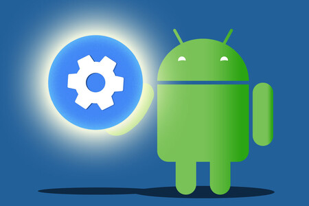

¿Qué es android?
Ya sabemos que la mayoría de los lectores de este blog tienen bastante claro qué es Android, qué diferencias tiene con otros sistemas operativos y por qué tiene tanto crecimiento. Pero nos gustaría al menos tener una entrada en este blog que explique qué es Android, aunque sea simplemente para tener un sitio al que remitir a los amigos que nos preguntan sobre nuestro teléfono móvil. Así que a modo de presentación, pasamos a explicar qué es Android, por qué se dice que es un sistema operativo para dispositivos móviles libre, cuál es su historia y por qué entendemos este sistema como la experiencia de Google en dispositivos móviles. ¿Qué es Android? Android es un sistema operativo inicialmente pensado para teléfonos móviles, al igual que iOS, Symbian y Blackberry OS. Lo que lo hace diferente es que está basado en Linux, un núcleo de sistema operativo libre, gratuito y multiplataforma. El sistema permite programar aplicaciones en una variación de Java llamada Dalvik. El sistema operativo proporciona todas las interfaces necesarias para desarrollar aplicaciones que accedan a las funciones del teléfono (como el GPS, las llamadas, la agenda, etc.) de una forma muy sencilla en un lenguaje de programación muy conocido como es Java.